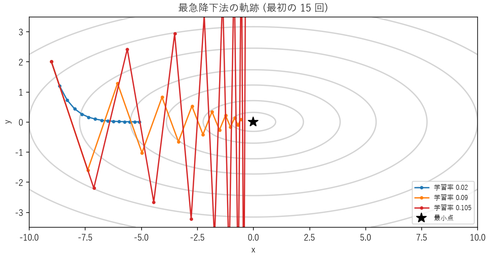
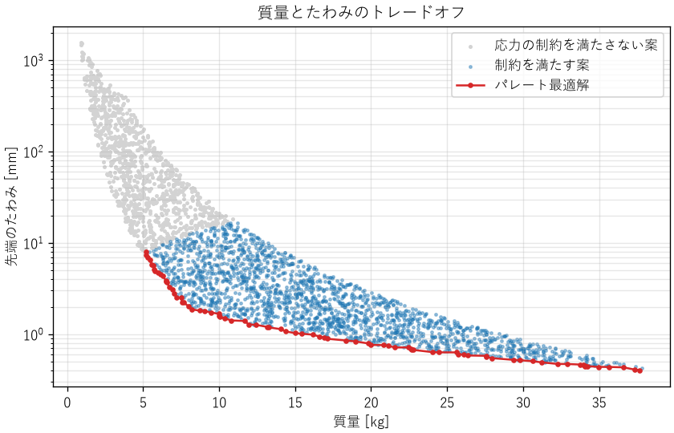

10. 最適化
設計では、制約を満たす案の中から、最も良い案を選びたい場面がよくあります。部品の寸法、制御のゲイン、キャッシュの容量、機械学習のパラメーターなど、対象は分野を問いません。本章では、最適化問題の立て方、代表的な解き方である勾配法、目的が複数ある場合の考え方を説明します。
10.1. 最適化問題の定式化
最適化問題は、次の 3 つの要素で表します。
- 設計変数
設計者が自由に決められる量です。ベクトル \(\boldsymbol{x}\) で表します。
- 目的関数
設計の良さを表す、最小化（または最大化）したい量です。\(f(\boldsymbol{x})\) で表します。
- 制約条件
設計変数が満たさなければならない条件です。不等式 \(g_i(\boldsymbol{x}) \le 0\) や等式 \(h_j(\boldsymbol{x}) = 0\) で表します。
これらを使って、最適化問題は次のように書けます。最大化したい場合は、目的関数の符号を変えて最小化します。
定式化の例を次に示します。
問題 |
設計変数 |
目的関数 |
制約条件 |
|---|---|---|---|
梁の設計 |
断面の幅と高さ |
質量（最小化） |
応力が許容値以下、たわみが許容値以下 |
制御ゲインの調整 |
\(K_p, K_i, K_d\) |
整定時間（最小化） |
最大行き過ぎ量が 10 % 以下、安定であること |
キャッシュの設計 |
キャッシュの容量、保持期間 |
平均応答時間（最小化） |
メモリの使用量が上限以下 |
生産計画 |
各製品の生産量 |
利益（最大化） |
機械の稼働時間、材料の在庫 |
最適化で最も難しく、最も重要なのは、定式化です。目的関数が本当の目的を表していなければ、どんなに上手に解いても役に立ちません。たとえば、応答時間の平均値を最小化すると、一部の利用者の極端に遅い応答が見過ごされることがあります。指標を目標にすると、その指標は良い指標ではなくなる（グッドハートの法則）、という警句もあります。数値を最適化するときは、それが本来の目的を表しているかを常に確かめます。
10.2. 局所解と大域解
ある点のまわりで目的関数が最小になる点を局所解、定義域全体で最小になる点を大域解と呼びます。多くの最適化手法は、出発点から目的関数が小さくなる方向へ少しずつ進むため、局所解に到達して止まり、大域解を見つけられない場合があります。
目的関数と制約条件が凸（グラフが下に膨らんだ形）の場合は、局所解が大域解と一致することが保証されます。そうでない場合は、異なる出発点から何度も探索する、確率的に探索する手法を使う、といった工夫が必要です。
10.3. 勾配法
目的関数の勾配 \(\nabla f\)（各設計変数での偏微分を並べたベクトル）は、関数が最も急に増える方向を向いています。その逆方向に少しずつ進めば、関数の値を小さくできます。これを最急降下法と呼びます。
\(\eta\) は 1 回に進む幅を決める係数で、機械学習の分野では学習率と呼ばれます。学習率の選び方は、結果に大きく影響します。
ch10_gradient_descent.py は、目的関数 \(f(x, y) = x^2 + 10y^2\) の最小点を、点 \((-9, 2)\) から探索します。この関数は、\(y\) 方向にだけ急な、細長い谷の形をしています。
54def gradient_descent(rate: float, max_iter: int = 1000,
55 tol: float = 1e-6) -> tuple[Array, str]:
56 """最急降下法で探索し、通った点の列と結果の説明を返す。
57
58 勾配の大きさが tol 未満になったら収束、目的関数が 1e6 を超えたら
59 発散とみなします。
60 """
61 p = START.copy()
62 path = [p.copy()]
63 for i in range(1, max_iter + 1):
64 p = p - rate * gradient(p)
65 path.append(p.copy())
66 if np.linalg.norm(gradient(p)) < tol:
67 return np.array(path), f"{i} 回で収束"
68 if objective(p) > 1e6:
69 return np.array(path), f"{i} 回で発散 (f = {objective(p):.3g})"
70 return np.array(path), f"{max_iter} 回で収束せず"
学習率 0.020: 410 回で収束
学習率 0.090: 85 回で収束
学習率 0.105: 54 回で発散 (f = 1.18e+06)


図 10.1 学習率による最急降下法の軌跡の違い
図 10.1 から、次のことが分かります。
学習率が小さい（0.02）と、安定して進みますが、緩やかな \(x\) 方向に進むのに多くの反復が必要です。
学習率を大きくする（0.09）と、反復回数は減りますが、急な \(y\) 方向で谷を飛び越えてジグザグに進みます。
学習率が大きすぎる（0.105）と、\(y\) 方向の振動が増え続けて発散します。
この関数では、\(y\) 方向の更新式は \(y_{k+1} = (1 - 20\eta) y_k\) です。\(|1 - 20\eta| < 1\)、つまり \(\eta < 0.1\) でなければ発散します。一般に、最急降下法が収束する学習率の上限は、関数の最も急な方向の曲率で決まります。一方、収束の速さは最も緩やかな方向で決まります。方向によって曲率が大きく違う問題（悪条件の問題）では、最急降下法は遅くなります。
この弱点を改善するために、曲率の情報も使うニュートン法や準ニュートン法、過去の進み方を利用するモーメンタム法や Adam などの手法があります。実務では、自分で実装するより、SciPy の scipy.optimize モジュールなどの実績のあるライブラリーを使うのが一般的です。また、設計変数の尺度をそろえる（たとえば、ミリメートルとキロニュートンのように桁の違う量を、同じ程度の大きさに正規化する）だけで、悪条件が改善されることもあります。
10.4. 制約の扱い
制約条件のある問題を解く方法には、いくつかの考え方があります。
- ペナルティ法
制約を破った量に応じた罰則を目的関数に加え、制約のない問題として解きます。簡単ですが、罰則の重みの選び方で結果が変わります。
- ラグランジュの未定乗数法
等式制約のある問題で、最適解が満たすべき条件を連立方程式として表し、解析的に解く方法です。
- 逐次二次計画法など
制約付きの問題を直接扱う数値解法です。ライブラリーで利用できます。
多くの工学の問題では、最適解はいずれかの制約条件の境界の上にあります。たとえば、軽い梁を作ろうとすると、応力が許容値ぎりぎりになる寸法が最適解になります。これは、最適化した設計は余裕がない設計でもある、ということを意味します。最適化の結果をそのまま採用するのではなく、ばらつきや想定外の負荷に対して余裕があるか（第 9 章の設計余裕、第 11 章の公差解析）を確かめます。
10.5. 多目的最適化
実際の設計では、目的が 1 つとは限りません。軽くしたいが、たわみも小さくしたい。速くしたいが、消費電力も小さくしたい。このように両立しない複数の目的がある問題を、多目的最適化問題と呼びます。
多目的最適化では、すべての目的で最も良い解は一般に存在しません。そこで、「ほかのどの解と比べても、すべての目的で劣ってはいない解」を考えます。このような解をパレート最適解と呼び、パレート最適解の集まりをパレートフロントと呼びます。パレート最適解でない解は、少なくとも 1 つの目的を悪くせずに別の目的を改善できるので、選ぶ理由がありません。
ch10_pareto.py は、長さ 1 m の鋼製の片持ち梁の先端に 1000 N の荷重をかける問題で、断面の幅 \(b\) と高さ \(h\) をランダムに 3000 通り作り、質量とたわみを評価します。たわみ \(\delta\) と、根元の最大曲げ応力 \(\sigma\) は、材料力学の公式で計算できます。
\(E\) はヤング率、\(I\) は断面二次モーメント、\(Z\) は断面係数です。
60def pareto_mask(f1: Array, f2: Array) -> NDArray[np.bool_]:
61 """2 つの目的 (どちらも小さいほど良い) のパレート最適解の印を返す。"""
62 order = np.argsort(f1)
63 mask = np.zeros(f1.size, dtype=np.bool_)
64 best_f2 = np.inf
65 # f1 の小さい順に見ていき、それまでより f2 が小さい案だけが残る
66 for index in order:
67 if f2[index] < best_f2:
68 mask[index] = True
69 best_f2 = f2[index]
70 return mask


図 10.2 片持ち梁の質量とたわみのトレードオフ
図 10.2 の赤い線がパレートフロントです。フロントの上では、質量を減らすとたわみが増え、たわみを減らすと質量が増えます。どの点を選ぶかは、最適化の計算では決まりません。「たわみは 2 mm 以下でよいので、その中で最も軽いもの」のように、設計者が要求に基づいて決めます。パレートフロントは、その判断に必要な選択肢と、トレードオフの大きさを示してくれます。
サンプルコードは、パレート最適解の一部を次のように表示します。
設計案 3000 個のうち、応力の制約を満たす案: 2028 個
パレート最適解: 80 個
質量[kg] たわみ[mm] 幅[mm] 高さ[mm]
5.18 8.01 10.9 60.6
5.99 4.70 10.4 73.6
7.07 2.78 10.2 88.1
9.06 1.79 11.9 97.0
11.94 1.28 15.2 99.9
16.16 0.99 21.1 97.6
20.84 0.76 27.0 98.1
24.47 0.63 31.4 99.2
29.39 0.52 37.6 99.5
34.06 0.46 43.8 99.0
質量の小さい側では、幅を下限（10 mm）近くに保ったまま高さを増やしています。高さが上限（100 mm）近くに達すると、今度は幅を増やしています。たわみは \(h^3\) に、質量は \(h\) に比例するため、まず高さを大きくするのが効率的で、高さが上限に達してから幅を増やすしかなくなるからです。もし高さの上限を緩められるなら、より良い設計が得られる可能性があります。このように、どの制約が効いているかを知ることも、最適化の重要な成果です。
10.6. 最適化のその他の手法
勾配を計算できない場合や、局所解が多い場合には、次のような手法も使われます。
手法 |
特徴 |
|---|---|
グリッドサーチ、ランダムサーチ |
設計変数の候補を網羅的または無作為に試す。単純で確実だが、変数が多いと計算量が膨大になる |
遺伝的アルゴリズム |
生物の進化を模して、良い解を組み合わせながら探索する。多目的最適化にも使われる |
焼きなまし法 |
確率的に悪い方向への移動も許し、局所解から抜け出す |
ベイズ最適化 |
評価に時間のかかる問題（実験や大規模なシミュレーション）で、少ない評価回数で良い解を探す |
線形計画法、整数計画法 |
目的関数と制約が 1 次式の問題を効率的に解く。生産計画や配送計画に使われる |
10.7. まとめ
最適化問題は、設計変数、目的関数、制約条件で定式化します。目的関数が本当の目的を表しているかを確かめます。
最急降下法は、学習率が大きすぎると発散し、悪条件の問題では遅くなります。実務ではライブラリーを使い、変数の尺度をそろえます。
最適解は制約の境界に張り付くことが多く、余裕のない設計になりがちです。
目的が複数ある場合はパレート最適解を求め、その中から要求に基づいて選びます。